6 Spatial Clustering
6.1 Aggregation to larger spatial units
To analyse the data spatially, I will be aggregating Singapore’s planning area data with the airbnb dataset.
planning_areas <- st_read(here::here("projdata/MP14_PLNG_AREA_NO_SEA_PL.shp")) %>%
filter(!(OBJECTID == 49 | OBJECTID == 18)) # remove islands## Reading layer `MP14_PLNG_AREA_NO_SEA_PL' from data source `/Users/jeancjw/Documents/SUTD/MUSPP/02.522 Urban Data & Methods II CUA/cua-jeanette-c/projdata/MP14_PLNG_AREA_NO_SEA_PL.shp' using driver `ESRI Shapefile'
## Simple feature collection with 55 features and 12 fields
## geometry type: MULTIPOLYGON
## dimension: XY
## bbox: xmin: 2667.538 ymin: 15748.72 xmax: 56396.44 ymax: 50256.33
## epsg (SRID): NA
## proj4string: +proj=tmerc +lat_0=1.366666666666667 +lon_0=103.8333333333333 +k=1 +x_0=28001.642 +y_0=38744.572 +datum=WGS84 +units=m +no_defslistings_sf <- st_as_sf(listings, coords = c("longitude", "latitude")) %>%
st_set_crs("+proj=longlat +datum=WGS84") %>% # projection we start from
st_transform(planning_areas %>% st_crs()) # projection we want to get toTwo listings in the west were removed as they could not be connected to build the minimum spanning tree.
hex_grid <- planning_areas %>%
st_make_grid(st_bbox(.), square = FALSE, cellsize = 1500) %>% # setting the sq to false means hex, and each hex is 1500m in size
st_sf() %>%
mutate(hex_id = row_number())
tm_shape(hex_grid) + tm_polygons()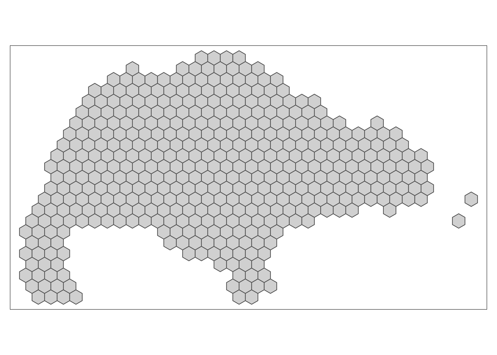
6.2 Clustering of minimum_nights variable
Referring to the plot below, we can see that plotting the entire range of minimum_nights returns a plot that can shows that there is not much spatial clustering going on. It only shows us that majority of the listings across Singapore are likely to be flouting the rules as the average minimum length of stay is between 0-100 days. This is also what was seen in the previous section.
min_nights <- listings_hex %>%
group_by(hex_id) %>%
summarise(min_nights = mean(minimum_nights)) %>%
left_join(hex_grid, .) %>%
filter(min_nights > 0 )## Joining, by = "hex_id"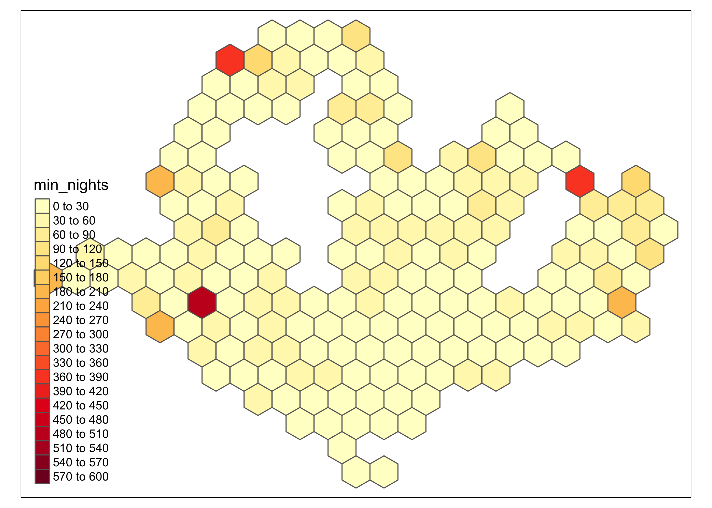
However, if the listing is a HDB flat, a better indicator would be a length of stay requirement that is below 180 days. While we cannot acertain from the clustering which listings are HDB flats, we can make an educated guess based on which areas are usually where HDB estates are located. Furthermore, it could also be the case where an owner only rents their home out through airbnb for the minimum length stated, and then extends the rental beyond that without going through the platform. Hence it would be interesting to look at finer-grain detail of the average minimum length of stay by setting the plot to display a maximum of 179 nights.
min_nights_180 <- listings_hex %>%
group_by(hex_id) %>%
summarise(min_nights = mean(minimum_nights)) %>%
left_join(hex_grid, .) %>%
filter(min_nights < 180)## Joining, by = "hex_id"## tmap mode set to plotting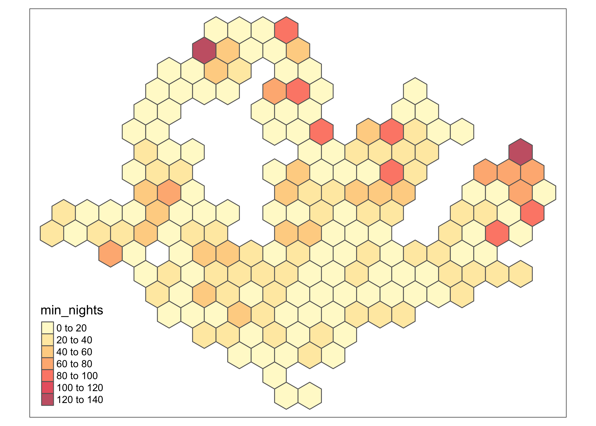
A large majority of areas still have listings that require an average minimum length of stay of 0-40 nights, and those that require at least longer length of stays are at the peripherals and away from the city centre. In fact, the city centre consists only of shorter-term stays up to a maximum of 60 days. This is not surprising because given the context of Singapore, the Central area is known to be where the more expensive neighbourhoods are, and where there are more private estates. The planning areas in the periphery with higher requirements for the minimum length of stay seem to be where HDB estates are. By zooming into these areas, we can see that many of them are indeed around HDB estates. Therefore, it seems that the number listings that are possibly flouting the rules are more than what was previously estimated when only those withi minimum length of stay below 90 days were taken into account.
6.2.1 Building the Minimum Spanning Tree
## Loading required package: sp## Loading required package: spData## To access larger datasets in this package, install the spDataLarge
## package with: `install.packages('spDataLarge',
## repos='https://nowosad.github.io/drat/', type='source')`hex_sp_nights <- as(min_nights_180, "Spatial")
hex_neighbours_nights <- poly2nb(hex_sp_nights)
# visually inspect neighbours
plot(hex_neighbours_nights, coordinates(hex_sp_nights))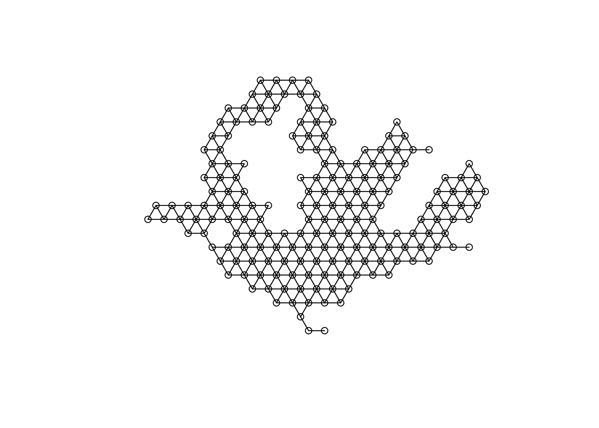
hex_edge_costs_nights <- nbcosts(hex_neighbours_nights, cluster_data_nights)
hex_edge_weights_nights <- nb2listw(hex_neighbours_nights, hex_edge_costs_nights, style = "B")
hex_mst_nights <- mstree(hex_edge_weights_nights)
plot(hex_mst_nights, coordinates(hex_sp_nights))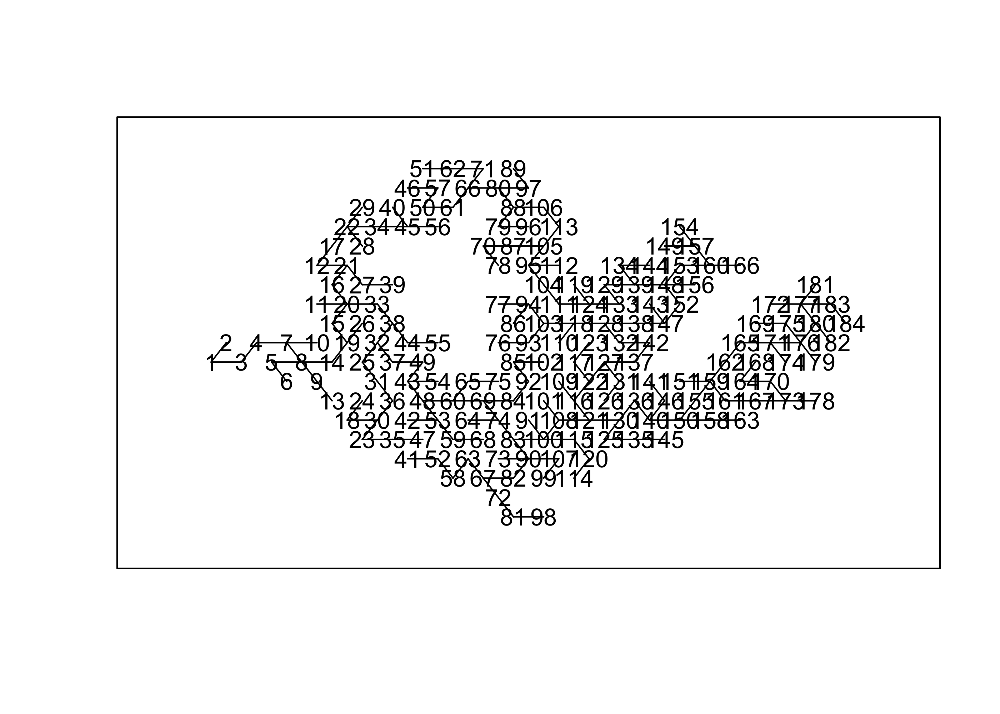
6.2.2 Clustering with SKATER
# deciding the number of clusters
hex_skater_elbow <- skater(hex_mst_nights[, 1:2],
cluster_data_nights,
ncuts = 40
)
tibble(
x = 0:40,
y = hex_skater_elbow$ssw
) %>%
ggplot() +
geom_line(aes(x = x, y = y)) +
ylim(0, max(hex_skater_elbow$ssw)) +
geom_vline(xintercept = 3, linetype = "dashed", col = "blue") +
geom_vline(xintercept = 15, linetype = "dashed", col = "blue") +
theme_light()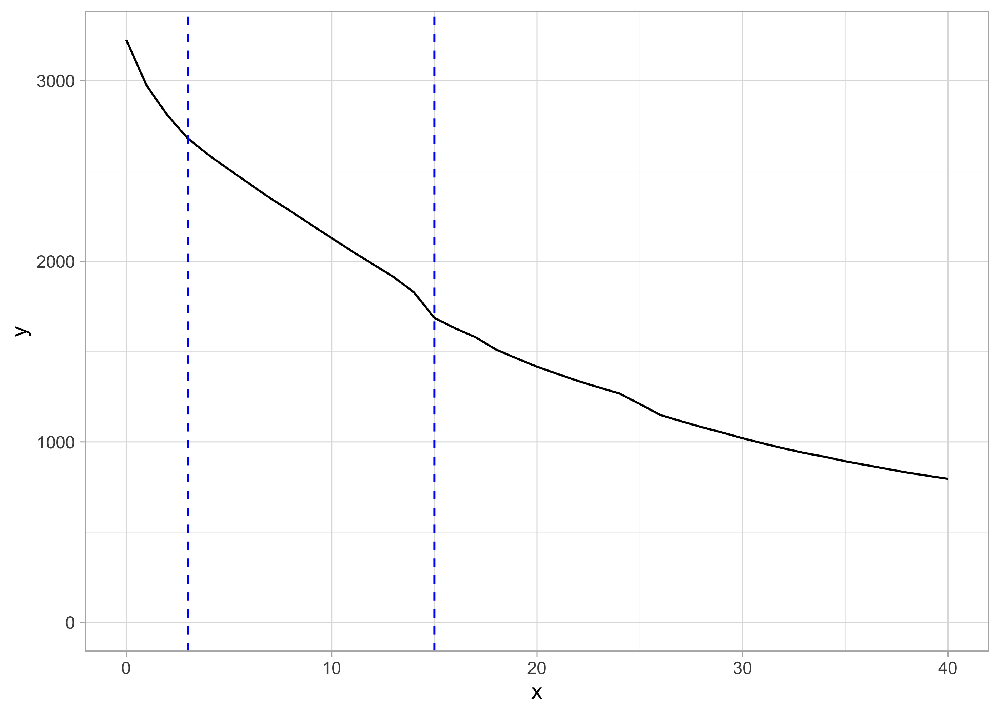
Here the elbow plot is not very clear of what the appropriate number of clusters is. It seems to be between 3-15, which is quite a wide range.
I will start by creating 3 clusters.
hex_skater_k3 <- skater(hex_mst_nights[, 1:2],
cluster_data_nights,
ncuts = 2,
crit=15)
min_nights_180$cluster <- as.character(hex_skater_k3$groups)
tm_shape(min_nights_180) + tm_polygons(col = "cluster") 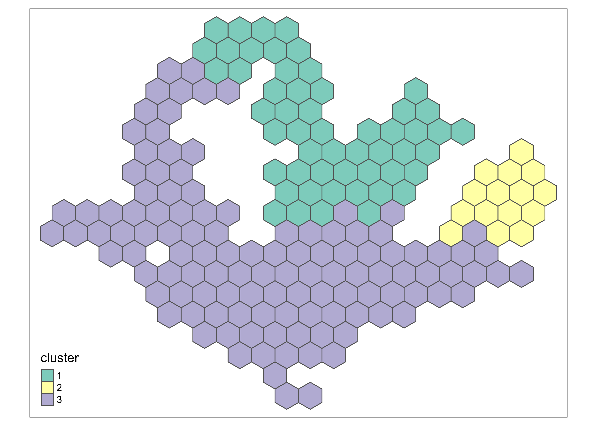
With three clusters made up of a minimum of 15 hexagons, the plot generalises the clusters too much.
hex_skater_k15 <- skater(hex_mst_nights[, 1:2],
cluster_data_nights,
ncuts = 14,
crit=6)
min_nights_180$cluster <- as.character(hex_skater_k15$groups)
tm_shape(min_nights_180) + tm_polygons(col = "cluster") 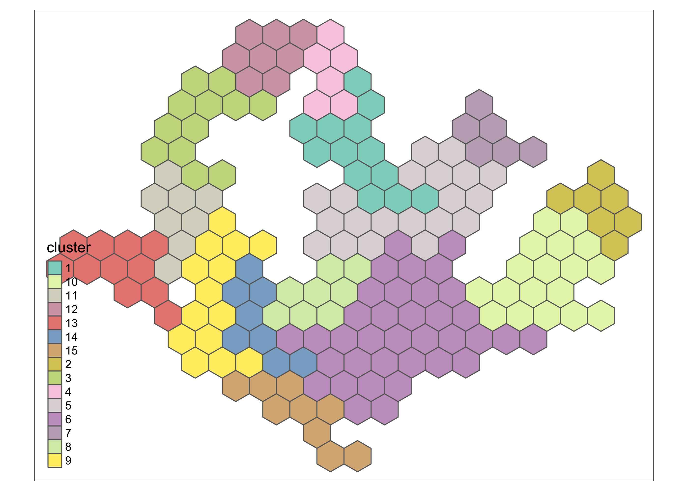
The clusters become more defined when increased to 15, but to avoid single-hexagon clusters, which may not be helpful, the minimum number of of hexagons in each cluster was set to 6. Despite so, there are too many clusters, and it is not helpful for our understanding of the average minimum length of stay.
hex_skater_k10 <- skater(hex_mst_nights[, 1:2],
cluster_data_nights,
ncuts = 9,
crit=6)
min_nights_180$cluster <- as.character(hex_skater_k10$groups)
tm_shape(min_nights_180) + tm_polygons(col = "cluster") 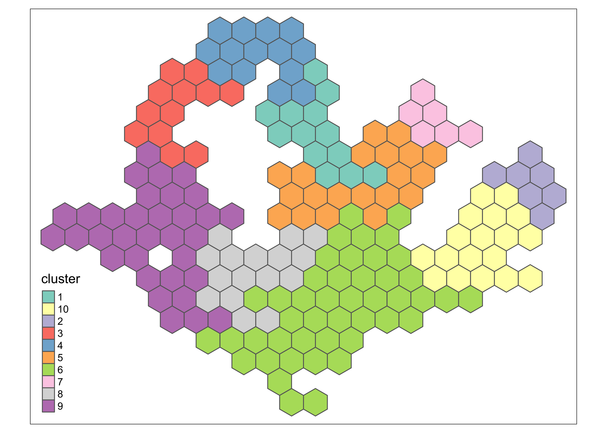
Similarly, adjusting the number of clusters to 10 has also not added much value to the analyses. Perhaps, in the case of the minimum_nights variable, there may not be any significant clusters. In fact, it might be more helpful to just show the distribution of the listings with minimum length of stay below 90 days and above 90 days.
6.3 Clustering of price variable
price <- listings_hex %>%
group_by(hex_id) %>%
summarise(price = mean(price)) %>%
left_join(hex_grid, .) %>%
filter(price > 0)## Joining, by = "hex_id"saveRDS(price, here::here("projdata/price.rds"))
tm_shape(price) + tm_fill(col = "price", breaks=c(0, 50, 100, 150, 200, 300, 400, 500, 600, 700,800,900,1000, 1100, 1200, 1300, 1400), palette = "YlGnBu") + tm_borders()## Warning: Values have found that are higher than the highest break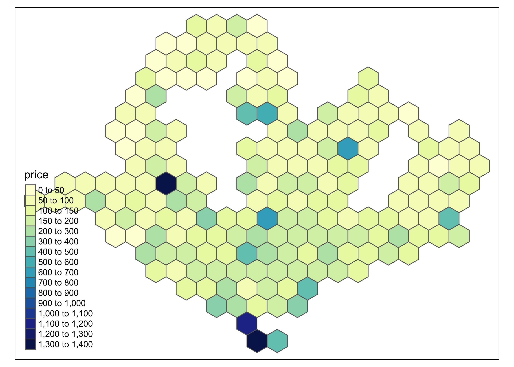
6.3.1 Building the Minimum Spanning Tree
hex_sp_price <- as(price, "Spatial")
hex_neighbours_price <- poly2nb(price)
# visually inspect neighbours
plot(hex_neighbours_price, coordinates(hex_sp_price))
hex_edge_costs_price<- nbcosts(hex_neighbours_price, cluster_data_price)
hex_edge_weights_price <- nb2listw(hex_neighbours_price, hex_edge_costs_price, style = "B")
hex_mst_price <- mstree(hex_edge_weights_price)
plot(hex_mst_price, coordinates(hex_sp_price))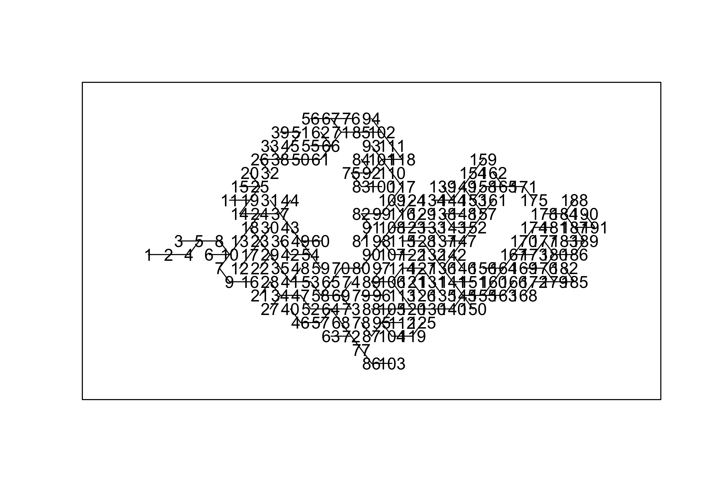
6.3.2 Clustering with SKATER
# deciding the number of clusters
hex_skater_elbow_price <- skater(hex_mst_price[, 1:2],
cluster_data_price,
ncuts = 40
)
tibble(
x = 0:40,
y = hex_skater_elbow_price$ssw
) %>%
ggplot() +
geom_line(aes(x = x, y = y)) +
ylim(0, max(hex_skater_elbow_price$ssw)) +
geom_vline(xintercept = 4, linetype = "dashed", col = "blue") +
theme_light()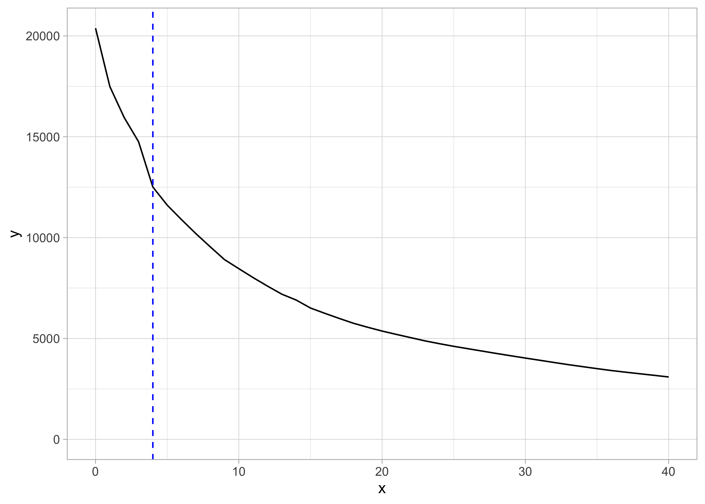
From the elbow plot it can be gathered that the optimal number of clusters is around 4.
hex_skater_k4 <- skater(hex_mst_price[, 1:2],
cluster_data_price,
ncuts = 3)
price$cluster <- as.character(hex_skater_k4$groups)
tm_shape(price) + tm_polygons(col = "cluster") 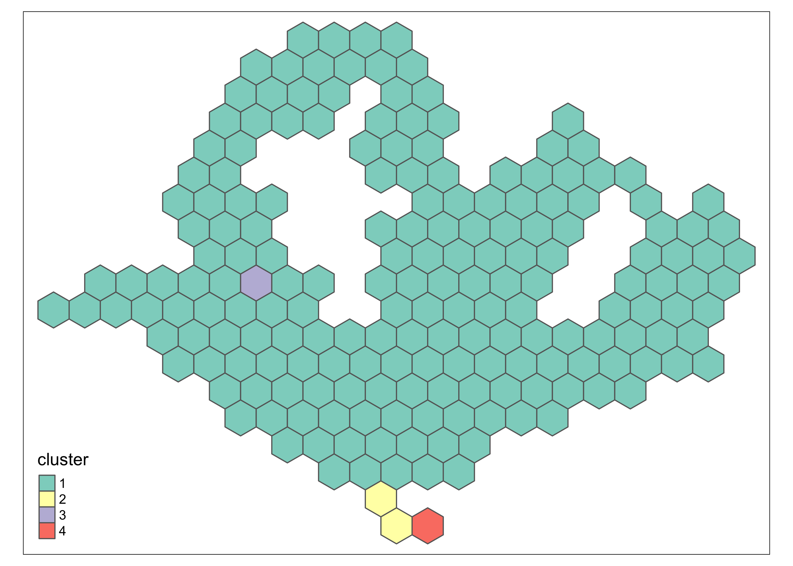
Without setting the minimum number of hexagons, the plot only picks out the areas with extremely high values. This is because there are a few hexagons that are outliers with high average prices.
hex_skater_k4 <- skater(hex_mst_price[, 1:2],
cluster_data_price,
ncuts = 3,
crit = 25)
price$cluster <- as.character(hex_skater_k4$groups)
tm_shape(price) + tm_polygons(col = "cluster") 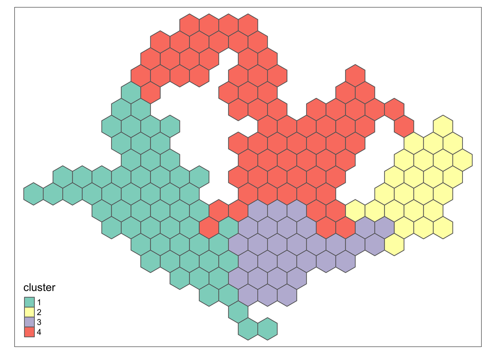
6.4 Reflection on Spatial Clustering
Overall, I found that spatial clustering was not necessary or helpful in analysis the data. Most of the information derived from here could be simply plotting the spatial distribution of listings as was done in Section 4. Clustering was inconclusive overall, especially since I was looking at Airbnb prices, where there were significant outliers, while mean prices across Singapore seem to have little differences in general.
When I performed the same analysis on the minimum nights, I realised it did not help to answer my research question because I was mostly keen to find out which listings were being rented out for less than 90 days, and which were being rented out for 90 days and above. With this in mind, there was no need to further cluster the listings, and it was more helpful to just look at these two categories of listings and where they were spatially located.